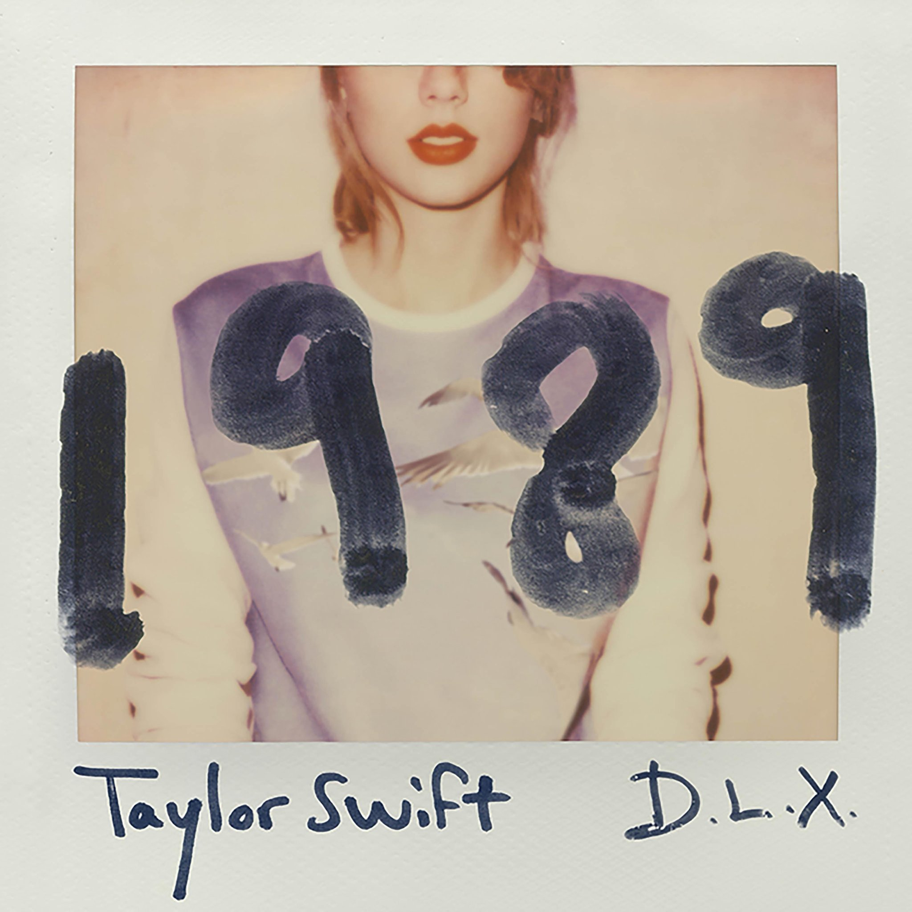

T.S.
TAYLOR SWIFT
A POLAROID IN MOTION
1989
DELUXE / D.L.X.
SIDE A / STYLE
Style — Taylor Swift · 1989 (Deluxe)
LYRICS · TAYLOR SWIFT · PRESS PLAY TO BEGIN

This little 3D room needs WebGL. The case is still here.